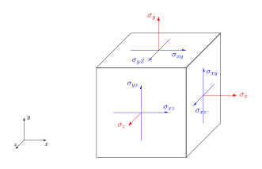

10. Teorie elasticity ve 3D#
10.1. Tenzor napětí#
Napětí je podílem velikosti působící síly a velikosti plochy, na kterou tato síla působí. Pro sílu kolmou k ploše mluvíme o normálovém napětí, pro sílu ve směru plochy o smykovém napětí.
Znaménková konvence - viz obrázek. Napětí v obrázku jsou kladná, opačná napětí jsou záporná. Kladné normálové napětí tedy značí tah, záporné tlak.
V obrázku jsou napěí pouze na třech stěnách, na zbylých šesti jsou odpovídající napětí tak, aby element byl ve statické rovnováze, tj. aby výsledná síla a výsledný moment byly nulové.

Tenzor napětí je bilineární forma, umožňuje výpočet síly na libovolně orientované ploše
10.1.1. Praktická ukázka tenzoru napětí v tříbodovém ohybu#
10.1.1.1. Tříbodový ohyb, tah v podélném směru#

Tah na spodní straně, tlak na horní straně a před podpěrami. Zeleně neutrální oblast, kde je napětí nulové.
10.1.1.2. Tříbodový ohyb, tah v podélném směru pro čtvrtinu nosníku#

Numerická simulace pro část nosníku šetří strojový čas a nároky na paměť. V tomto případě je možné použít symetrii a počítat pouze čtvrtinu nosníku.
10.1.1.3. Tříbodový ohyb, smykové napětí#

Smykové napětí v levé a pravé polovině nosníku se liší znaménkem, je antisymetrické.
10.2. Linearizace vektoru posunutí, tenzor deformace#
linearizace, nelineární transfromace a její linearizace
separace rotační, posuvné a deformační složky
tenzor deformace \(\varepsilon\)
Komponenty \(\varepsilon_{ii}\) jsou normálové deformace, \(\varepsilon_{ij}\) pro \(i\neq j\) jsou smykové deformace.
Normálová deformace udává, o kolik procent se materiál v daném směru prodlouží (kladná hodnota) nebo zkrátí (záporná hodnota). Smyková deformace udává, jak se změní pravé úhly (v obloukové míře).
10.3. Hookův zákon pro izotropní, anizotropní a ortotropní materiál#
Tenzory napětí a deformace upravíme na vektory.
Matice poddajnosti je maticí, vyjadřující úměrnost mezi oběma tenzory.
Matice poddajnosti je symetrická
Modře vyznačené prvky dávají do relace smykové namáhání a normálové napětí. Červené vyznačené prvky dávají do relace smykové napětí v jedné rovině se smykovou deformací v jiné rovině.
10.3.1. Ortotropní materiály#
Ortotropní materiály jsou materiály, jejichž struktura se nemění při rotaci o \(180^\circ\) okolo libovolné ze tří navzájem kolmých os. Typickým představitelem je dřevo.
Při vhodné volbě souřadnic nevyvolávají normálová napětí deformaci a smyková napětí vyvolávají jenom smykovou deformaci v rovině, ve které tato napětí působí. V pravém hodním bloku matice jsou nuly a pravý dolní roh je diagonální.
Materiálové vlastnosti určujeme pomocí devíti na sobě nezávislých materiálových konstant. Pomocí Youngových modulů pro jednotlivé směry, pomocí Poissonova čísla a pomocí smykových modulů je možno formulovat vztah následovně.
10.3.2. Materiály izotropní v jedné rovině#
Materiály izotropní v jedné rovině (též uniaxiální, transerzálně symetrické, …) jsou materiály podobné ortotropním, ale ve dvou ze tří směrů mají stejné materiálové vlastnosti a díky tomu mají stejné vlastnosti ve všech směrech této roviny. Typickým představitelem jsou sendvičové materiály, například geologické vrstvy.
Konstanty související s izotropií jsou stejné. Například pro materiál izotropní v rovině \(xy\) vypadá materiálový vztah následovně.
Tyto materiály popisujeme pomocí pěti nezávislých materiálových konstant. Šestá konstanta je dána vztahem
10.3.3. Izotropní materiály#
Izotropní materiály mají ve všech směrech stejné vlastnosi.
Pomocí Youngova modulu, smykového modulu a Poissonova čísla dostáváme následující vztah.
Izotropní materiály charakterizujeme pomocí tří materiálových konstant. Mezi těmito konstantami je vztah
10.4. Přímé nosníky#
Posouvající síla a ohybový moment u nosníků.
Diferenciální rovnice ohybové čáry nosníku